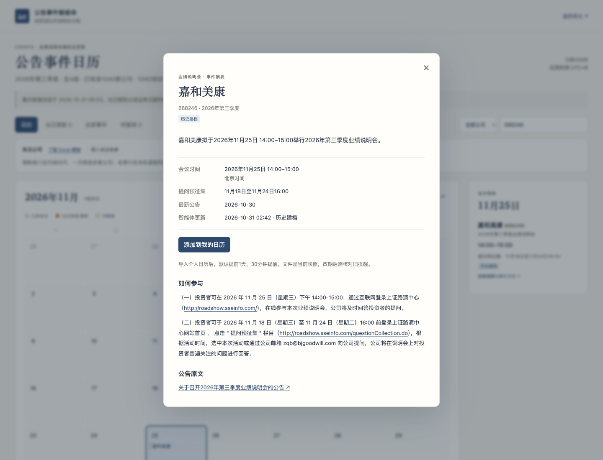
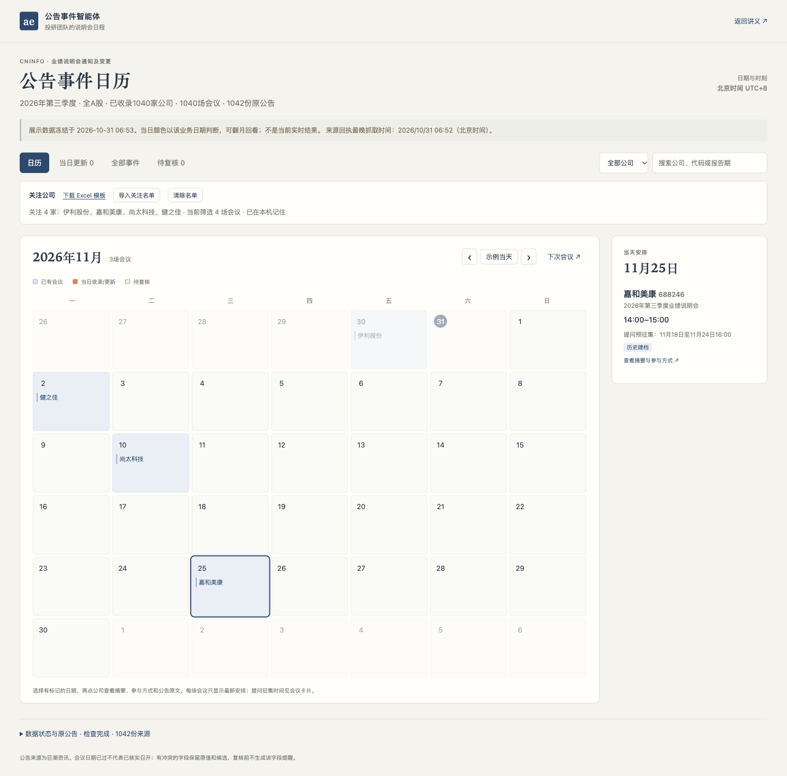

第三讲 · 从巨潮公告到事件日历
从零搭建公告事件智能体
从巨潮公告出发，做出能按日历安排参会、查看摘要、设置提醒并持续更新的公告事件产品。
一家金融企业的投研团队需要安排业绩说明会、提前准备问题。通知散在公告里，改期又会另发一份。研究员真正需要的是知道哪天有哪家公司、何时准备问题、怎样参加，并在事前收到提醒。我们希望让智能体自己取回公告、保留依据、按时更新，再把结果放进一个每天能用的事件日历。
这一讲请你代入业务需求方，用自己的编程Agent从空目录开始搭建。先聊清需求，做出第一小步，检查它留下的文件和网页，再带着具体问题继续修改。最后交付的是一个公告事件智能体，以及可以展示和检查它工作的产品页面。
从自己的新目录开始。原公告由Agent取得，验证材料与教师参考按进度另行使用。
先把数据跑通，再做产品和定时
课堂按下面的顺序搭建。先检查两家公司的完整数据链，再扩大范围。数据验收后制作日历，最后接定时任务。
- 两家公司自己取回PDF
核对公司与公告，保存原始响应和PDF。
- 逐页文字检查正文是否可读
保留物理页顺序，核对日期、网址与跨页内容。
- 提取与核验先拿到可靠记录
小模型先试，用原PDF和独立标准检查字段。
- 扩大数据范围检查新模板和变更
扩至全A股两个月，逐项对账并处理失败。
- 数据通过后制作日历产品
用已验收事件生成日期、摘要、参与方式和提醒。
- 手动链条通过后接上定时更新
让系统重复同一流程，实际等待并检查一次触发。
你使用的编程Agent
任选能读写项目并运行程序的工具。它负责搭建和修改，下文的短需求与反馈都发给它。
你做出的公告事件Agent
是本机独立运行的程序，负责查询、更新和定时执行。日常运行不需要编程Agent一直留在对话中。更新后的网页和日历提醒文件使用同一批已核验字段。
程序调用的提取模型
通过自己的硅基流动账号使用。先试4B，再根据同一标准比较9B、27B，和编码模型分别配置。
本次实测选择固定步骤配合模型提取。模型负责分类和读原文，程序掌握查询覆盖、状态提交与停止条件。是否再加规划器，可以在完成主线后用实测比较。
开始前：准备项目、材料与账号
先认识材料包
打开自己的新项目
准备一个空项目
新建英文文件夹，例如
announcement-agent，用你选好的编程Agent打开。下载起步材料包后把两份小文件放进去，也可以直接从空目录开始。起步包只有短业务说明、公司身份和来源网址，原公告由你的Agent实际查询和下载。确认编程Agent能工作
确认它能在这个文件夹里创建文件、运行程序和读取网页。若只给方案不实际操作，检查当前是否处于允许编辑和执行的模式。Python、PDF读取工具和其他最小依赖可以由它按本机环境检查、安装并说明。
准备自己的硅基流动账号
准备程序可用的API Key，在硅基流动控制台检查自己的模型和可用额度。让编程Agent指导你使用用户级配置或隐藏输入，不把密钥放进代码、网页、共享聊天或材料包。编码模型能聊天，不等于生成的程序已经获得同一项授权。
确认能访问巨潮
打开巨潮资讯，试着查找伊利股份600887、嘉和美康688246，并打开一份原始PDF。课前只确认来源可访问，不把预先下载好的公告当成这次Agent已经会取数。
先用一两家公司完成PDF下载、逐页文字、提取、核验和事件更新。通过后扩大到全A股、会议日期在2026年10—11月的三季度说明会。扩围数据通过后制作日历，再接定时任务。先看每步目标，再发送适合自己进度的短需求。等Agent实际做完，打开文件，对照“应该看到”和“确认后再继续”。如果有问题，指出具体记录、原文或运行结果，再用折叠的反馈例子继续。
首节按约90分钟安排，优先完成两家公司的真实取数、提取和人工核验。去重、变更、两个月扩围核验与真实定时触发可以续讲，全部验收后才算完成这一主题。当前已做过独立Agent从零搭建模拟，还没有真人教师在90分钟内完成全程的试讲证据。
从需求出发，确定第一小步
先让Agent理解业务用途和完成标准，再开始写程序。
现在怎么做
- 在自己的新项目中描述投研团队的日常工作。
- 回答Agent对公司、范围、频率、时区和结果入口的追问。
- 请它先做最小一部分，并检查本机运行条件。
我们投研团队要跟踪伊利和嘉和美康2026年三季度的业绩说明会，安排参会和准备问题。想做一个会定时查巨潮、更新事件日历的助手，让我们看公司摘要、原公告并安排提醒。先和我聊清楚需求。
AI可能询问覆盖公司、哪些公告算目标、回看多久、在哪台电脑运行、日历怎样展示、提醒怎样送达。试点可以这样回答：
先做伊利股份600887、嘉和美康688246，只看业绩说明会召开通知及变更。首次回看90天，先交付能逐条核验的数据文件，后续做成本机网页。按北京时间每天08:30检查。
巨潮周末也披露公告，这里选择每天检查。业务时间也要和电脑本地时间区分，这里的08:30北京时间对应日本时间09:30。把提醒方式先记入需求，等第7步制作产品时再实现。首次回看的旧记录和后续新更新要区分；邮件、飞书或自动订阅可在主线后另做。
应该看到
- 一份简短需求记录，写清服务对象、公司身份、公告范围、频率、时区和产品入口。
- 最小搭建顺序，以及当前环境缺什么、怎样补齐。
确认后再继续
- 你能复述这个Agent每天做什么、去哪里看结果。
- Agent准备先实际做出一小步，未把设计文档当成成品。
自己的需求记录、环境检查结果和下一小步。文件名可由你的Agent决定。
本步没做好？看反馈例子
先缩小范围。只把两家公司查对，列出公告并让我打开原文。等来源通过，再加提取、日历和定时功能。
让Agent从巨潮自己取回公告
让第一条结果从真实查询开始，并能回到原文。
现在怎么做
- 让Agent实际查询两家公司最近90天的候选公告。
- 核对公司代码、标题、发布时间和链接。
- 打开至少一份下载的PDF，再看分页与覆盖记录。
请现在实际查巨潮，列出这两家公司最近90天的候选公告。保留查询条件、每页结果和原PDF，让我能核对公司与来源。查询失败要明说。
程序可以使用网站实际提供的查询请求。让Agent说明怎样确认结果已取全，例如是否读到最后一页、总量是否一致、日期条件是否生效。
应该看到
- 两家公司各有查询成功或失败记录，原始响应和PDF已经保存。
- 公告列表可以打开原文，代码、名称和标题相符。
确认后再继续
- 没有用搜索摘要替代公告正文。
- 空结果、请求失败和分页未完成有不同状态。
- 能说明查询覆盖了哪些公司、日期和关键词。
参考实现使用“业绩说明会”关键词，完整性只覆盖约定查询条件。若要覆盖不含该词的变更标题，需要另做召回检查。2026年10月30日的首次窗口取得伊利2份、嘉和3份关键词候选PDF；按三季度筛后各1份。候选公告数不等于本期会议数。
查询条件与响应、候选公告目录、原PDF及文件指纹。
本步没做好？看反馈例子
先给我看这次请求和实际返回，区分没有符合条件的公告和没有查成功。先查清原因，保留已有记录。
把PDF转成逐页文字，先检查读到了什么
先确认程序读到了原公告，保留文字与物理页的对应关系。
现在怎么做
- 让Agent把两家公司本期通知的PDF逐页转成文字，保存原PDF及其文件指纹。
- 对照PDF检查会议时段、提问预征集或报名时间、参与路径和网址。
- 抽查换行、跨页与空白页。整份没有可读正文时停下，定位下载、文字提取或扫描页问题。
把这两份公告逐页转成文字，保留对应PDF和物理页码。先让我对照会议时间、提问征集时间及参与方式，确认正文读对了，再做结构化提取。
文字可以保存为逐页TXT，或保留每页文字的JSON。参考实现保存逐页文字，送模型时加上每页编号；具体文件格式由你的Agent选择。页码对应PDF物理页，不能把页脚印刷页码当成同一回事。
应该看到
- 两份原PDF和对应逐页文字，能找到同一段内容。
- 会议时间与公告发布日期分开；提问、报名与参会方式所在段落都保留。
- 下载失败、空白正文和需要进一步识别的页面有具体说明。
确认后再继续
- 逐页文字没有漏掉会议的结束时刻或提问征集区间。
- PDF中的可见网址完整，换行后仍能对应原文。
- 跨页文字保留各自页码，没有先拼成一段假引文。
- 没有根据标题、文件名或搜索摘要补造正文。
原PDF、逐页文字、文件指纹和人工读源检查记录。
本步没做好？看反馈例子
这里的文字是空白。先核对PDF是否下载完整，再检查是不是扫描页。保留原页图，说明需要哪一步识别，不要把没读到的内容交给模型猜。 原文的这个网址被断成两行了。请保留页面文字和原PDF，核对拼接后的完整地址。原文看不到的隐藏链接不要加入。
用4B提取，再逐条对照原文
先提取并核验第一家公司，再用相同流程检查第二家公司。保留未通过字段，下一步用独立标准评分并决定怎样改进。
现在怎么做
- 从已检查的逐页文字中选第一份，保留物理页编号和原件指纹。
- 使用自己账号可用的4B模型提取，保留原始回答。
- 打开PDF逐字段核对，再提取第二家公司的公告，用同样标准检查。
先用硅基流动的Qwen 4B提取一份公告：会议日期、整场起止时间、提问预征集的时间段、报名事项及截止、参与方式和报告期。日期要附页码与连续原文；没写的留空，保存模型原始回答。
本次实测使用Qwen/Qwen3.5-4B、Qwen/Qwen3.5-9B和Qwen/Qwen3.8-27B。让Agent先核对你账号当时可用的模型目录，记录请求与实际返回的模型ID。这里通过API使用托管模型，27B表示参数规模。
应该看到
- PDF、逐页文本、原始模型回答和核验结果能对应起来。
- 两条可核验的结构化记录，包含会议日期、起止时刻、提问或报名时间、参与方式及原文页码和链接。
- 原文明确给出提问征集起止区间时完整记录；只写截止时保留截止，不补起点。未通过字段单列。
- 每次模型调用有版本、用量和失败记录，用量缺失时标未知。
确认后再继续
本步先完成逐项对照并记录结果。发现错误就带着原始回答进入第4步，不能把未通过记录当成已验收数据。
- 整场会议的时段正确，没有只取其中一个环节。
- 引文能在所标页连续找到，没有用省略号拼接。
- 省略年份有可核验上下文，不能给日期随意补年。
- PDF不可读时明确停下，没有让模型补造内容。
- 摘要来自已核验字段。提问、预报名及其他截止事项按原文分别命名；证据不足时保留“截止时间”，不按公司或网址猜。
- 只有一个网址时，不能凭域名编造直播、报名或登录方式。
两家公司的原始提取、逐字段证据、程序核验结果和人工对照记录。
本步没做好？看反馈例子
这段引文在原页找不到。保留原来的失败，只修这份公告，引用同一页连续出现的文字，不要拼接。重跑后展示原始回答和逐字核对结果。 这里把提问截止当成会议日期了。请分别指出两处原文，程序也要检查日期属于哪个句子，不能只看同页出现过这个日期。
加入独立标准，再决定怎样换模型
用同一组原文检查改进效果，让模型选择有依据。
现在怎么做
- 保留第一轮原始输出，再打开独立验证包。
- 抽查召开通知、改期、无时刻与排除样本，确认候选标准。
- 先定位错字段或错证据，再修改要求、比较9B和27B。
加一组独立核验的公告，检查刚才的提取。先别把答案给提取模型。逐条比较原始输出，列出错字段、错引文和没返回的记录，再决定怎么改。
本期验证包有18份三季度原件、40物理页。先用--suite small核对伊利和嘉和的2份，再在扩围时用templates的8份新模板、changes的8份原通知与延期材料；all才要求18份齐全。候选标准经独立读源与逐页核对，仍需任课教师签认。check_gold.py接受每行{id,result}的原始输出，比较12个关键字段，并检查来源与连续引文。有预先冻结备选的参与网址还会单独核验用途，不能用提问或重播入口替代参会。字段名不同可以做保留原值的格式转换，缺字段仍算失败。原12份历史回归包单独保留，半年报不得进入当前产品。
应该看到
- 逐条差异报告、失败原答和本次修改。
- 模型、提示词与用量分别记录，人工修订另存。
- 保持同一标准比较后的选择，而不是只说“大模型更好”。
确认后再继续
- 候选标准已由老师抽查，答案没有进入提取请求。
- 没有把手工改答案计为模型通过，也没有放宽标准消除失败。
- 当前小样本2份关键字段与证据通过，并抽查原PDF；扩围还要通过另外16份，不能用2份代替全部新模板。
- 在独立目录解压核验包，实际运行评分工具；工具报错与模型字段错误分别处理。
以下是备课扩大来源后的模型比较。课堂此处先验2份，另外16份在第6步使用。8份新模板中，4B、9B、27B首轮分别有6、5、7份同时通过字段与证据检查。27B有1份引文太短，按程序指出的问题仅重做该份后通过，原始7/8保留。随后另做8份独立读源留出，27B关键字段8/8；首次证据7/8，发现程序漏识别中芯“说明会将于……举行”的正确句式，修程序后原回答重评8/8，没有增加模型调用。两轮属于不同阶段，不能合成未经调试的普遍准确率。参考实现据这些结果选27B，你仍须依据自己版本的实测选择。
验证包同时含原文和答案，隔离依赖分目录与操作约定，不是权限隔离。检查实际送入模型的内容。单份公告提取全对，合并多份公告时仍可能出现冲突。
独立测试报告、各轮原始输出、实际模型与用量，以及采用当前配置的理由。
本步没做好？看反馈例子
4B这批还有错误。保持同一批原文和验收要求，先比较9B；仍不过再试27B。保留每轮原答、错误和用量，不靠改答案或放宽标准算通过。 你说这条引文不成立，但原文“说明会将于……举行”确实说明了会议日期。先检查是模型取错，还是你的核验程序漏了这种句式。保留原回答和首次报告，只修有原文支持的判断，再重新评分。
在两家公司上跑完整条数据流程
把下载、逐页文字、提取、核验与事件记录接成一个可重复运行的入口。
现在怎么做
- 让Agent从查询开始，实际完成这两家公司的整条数据流程。
- 打开输出的记录表或JSON，对照原PDF检查每条会议及参与信息。
- 用同一来源再跑一次，核对记录身份、数量、来源和更新时间。
- 在独立测试目录模拟下载失败或中断，再检查恢复是否只重做失败环节。
现在把两家公司的查询、PDF、逐页文字、提取和核验接起来，完整跑一次，交付事件数据和检查报告。再重跑，检查没有重复会议，未变公告能复用已核验的回答。
应该看到
- 每条已接受记录能回到本次取得的原PDF、逐页文字、模型原答和核验结果。
- 两家公司的当前三季度事件记录完整，未写明的字段保持空值；失败或矛盾另列。
- 重跑不重复建会，不把检查时间当成事件更新时间。
- 下载失败保留旧记录并显示本轮未完成，恢复时确实重新读取失败原文。
确认后再继续
- 两家公司都已从真实来源走完整条链，人工抽查与独立标准通过。
- 公告发布日期、会议日期、提问征集及报名时间分别核对。
- 原文明确的起止区间已保留，参与路径和可见网址齐全。
- 没有用旧PDF复核成功来掩盖这次重抓失败。
- 原文和请求未变时才复用提取；未知是否返回的模型请求保留为未知。
当前两家公司没有本期真实更正时，先证明相同来源不会重复。更正规则可以用明确标注的隔离样本检查，第6步再用本期真实改期核对，不能混入半年报或虚构真实公告。
两家公司可重复运行的数据流程、已核验事件数据、重跑对照和失败恢复记录。
完成自己的第一次提取与核验后，可以打开两家公司数据对照样例。它展示数据阶段应交付什么，不作为自己的提取输入或原始模型成绩。伊利原文中的预报名与提问预征集分别记录，即使截止相同也不混成一项。
本步没做好？看反馈例子
先指出失败在下载、转文字、模型提取还是核验。保留原结果，只重做失败部分。网络失败要重新抓到原文，不能只检查旧缓存就说这轮成功。 这里同时写了预报名和提问预征集。请分开保留两项原文与时间，先判断是提取遗漏还是后处理漏掉，不要直接混成一个截止。 这条公告没变。请先核对PDF指纹、模型请求和旧回答，能重新核验就复用；没有返回回执的请求标未知，别直接重复付费。
把两家公司扩到全A股的两个月，再检查一次
小样本通过只说明这一两种写法可用。先检查扩大范围后的问题，再让它每天自主运行。
现在怎么做
- 保留小样本结果，在独立工作区扩大到全A股，限定2026年三季度说明会、会议日期2026年10月1日至11月30日。
- 让Agent说明实际检索起点、抓取时刻、沪深北身份、分页及去重情况。公告可能提前披露，不能只查询10—11月发布的文件。
- 数清候选、明确排除、下载成功、提取通过、待复核和未处理。分批处理要能从上次进度继续。
- 在新模板中先取小批，对照原PDF或视觉核验；另留未参与修复的样本再检查日期、时段、参与全文与变更。
- 检查事件表的去重与更正：原通知锚定同一会议，明确更正只更新该事件；当天新增、变更与提取校正分别记录。
小样本已核验。请扩到全A股、会议日期在2026年10—11月的三季度说明会，先查候选和覆盖情况，再分批处理。给我原文抽查样本、未处理和错误清单，全部数据通过后，再做日历产品和定时。
应该看到
- 小样本结果保留；扩围有独立的来源清单、明确日期与处理进度。
- 半年报、往年三季度和其他报告期有排除理由，已接受事件表只包含本次范围。
- 每份候选都有去向。查询失败、限流或预算用完均显示未完成，可以恢复。
- 不同参与方式完整保留，记录中的网址来自可见原文，原公告能打开。
- 新模板关键字段逐项核验，模型不够用时先指出失败，再比较更大模型。
本次扩围实际发现，部分“本公司三季报集体业绩说明会”被当成一般集体接待日排除。它们有本公司的报告期、参会时段和提问安排，应当收录。同一批还发现括号公告编号、图片封面和“计划于……参加说明会”等写法。先核对原件，再区分模型分类错和程序误拒；不能看到报错就一律换大模型。
本期两组真实改期用于检验事件合并：健之佳由10月29日10:00—11:00改到11月2日09:00—10:00；尚太科技由10月26日15:30—16:30改到11月10日同一时段。核对原公告号、前后值和两份原件，更正后事件表只保留一条当前安排，历史与来源另存。新日期不是新事件身份。
确认后再继续
- 去重后的ID数与来源稳定总数对齐；不能以下载行数相同宣称分页完整。
- 用沪、深、北样本及单公司查询交叉核对召回，明确关键词和时间边界。
- 会议日期、报告期与公告发布日期分清；仅在正文提及往期安排不另建事件。
- 未处理清零，待复核项有处理结论；已接受关键字段在独立样本中全部有原文支持。
- 同一快照重复运行不重复建会、不重复付费提取，失败或中断后能续跑。
两个月的全市场三季度候选清单、处理统计、抽查标准与核验记录、修复和复跑证据，以及可供产品直接读取的已核验事件数据。
本步没做好？看反馈例子
扩围还没通过。请按来源、提取、事件关联分别列出实际失败，保留原始响应，限流时降低频率并稍后续跑。不要把缺口记成无新增，也不要先装定时任务来算完成。 这个截止句在上一页末和下一页首接着写完，不能当作缺失，也不能拼成一条假引文。请逐页引用，并检查两段确实相邻连续。保留首次失败，修好后重新给我核验结果。 这里是本公司本期三季报的集体业绩说明会，有明确参会安排。请检查是否把它误当成一般接待日，并抽查其他已被忽略的记录。保留原分类和修正过程。 这条字段可能正确，程序却不认识原文的编号或“参加说明会”句式。先用原PDF定位原因，只修有原文支持的检查，再复用原答评分。改提示词后也保留原提取版本，不把旧正确记录全部重新付费。 这里是半年度与三季度合并说明会，请核对整句用途，不能只读前半句就排除。无法确定的年份或多场日期留待核验，先不要删掉来源。
用已核验数据制作日历产品
两家公司和扩围数据都通过后，再把可靠记录做成研究员可以使用的日历。
现在怎么做
- 确认第6步的事件数据及验收报告，列出这次产品读取的文件、范围和记录数量。
- 让Agent从这份数据生成月历、公司列表与事件详情。
- 对照数据检查会议卡片、提问征集区间、参与方式和原公告链接。
- 再添加关注名单、当日更新和具体事件的提醒，逐项实际操作。
数据已经核验通过。现在基于这份事件数据做日历：翻月、点日期看公司，再点公司看会议时间、提问征集时间、参与方式和原公告。先说明读取哪份数据，做完后让我对照核查。
这一阶段要交付的日历产品
打开公告事件智能体展示产品，先用日历完成一次参会安排：翻到11月，选日期、看公司、打开事件摘要，再查看完整参与方式和公告原文。也可以搜索伊利或嘉和美康，与两家公司起步样例对照。

先看哪天有安排
有会议的日期与空白日期颜色不同。今天收录或发生更新的安排突出显示，历史会议可回看；改期后旧日期的卡片移除。可搜索公司，也可导入关注名单。
再看公司和摘要
点击日期看公司，再点公司看整场起止时间、提问预征集区间或准确截止、完整参与方式与原公告。改期与冲突直接出现在这场会议的详情中。
把安排加入提醒
在这场事件的详情中下载会议及已确认截止的日历文件，导入自己的日历。文件含提前1天、30分钟的提醒；不确定字段不生成提醒。
主展示使用本轮全A股扩围中核验通过的三季度会议，会议日期限定2026年10—11月；两家公司起步样例另行保留。只有半年报、年度或其他报告期的说明会不进入本次产品；同一场合并包含三季度时标明“合并召开”，仍只计一场。往期事项被另一份公告提及时也不另建事件。展示版冻结于明确的一轮实际运行，具体数量和来源时点见页面；图例中的“当日”指该轮日期，自己的实时产品按北京时间判断“今天”。首次回看的旧公告标为历史建档，当天披露并收录、后续新发现、安排变更和提取校正分别说明。不能为展示两种颜色虚构旧收录日期。

“如何参与”直接显示原公告的完整步骤，伊利电话会议的三条路径与上证路演中心的音频、网络互动方式全部保留，原文中的网址可以点击，不另加通用入口按钮或展开控件。
也可查看伊利参与方式实拍、手机宽度的日历、手机宽度的事件详情和手机宽度的完整参与方式。


“全部事件”按会议日期从新到旧，同一天再按开始时刻倒序。“当日更新”沿用现有标签查看，不另外增加表格。日历旁只列选中日期的公司；进入具体事件后再添加提醒。“公告原文”只列原通知与变更公告的链接，每份文件出现一次。嘉和11月24日16:00是提问截止；伊利同时列出预报名与提问预征集，按各自原文分别展示。
日历与“当天安排”只列会议。会议起止时间放在主行，下一行显示公告明确的提问预征集区间。只注明截止时就只写截止；报名按报名命名，未写的起点不补。更正后更新同一张会议卡，旧日期不再出现，原通知与变更可在详情中回看。同一天先列当日收录或更新，再按会议开始时间排列。
固定跟踪多家公司时，先下载关注公司 Excel 模板，每行填公司简称或六位股票代码。导入后，日历、当日更新、全部事件和复核视图都按这份名单筛选，刷新会恢复本机名单。清除后回到全部公司。名称歧义、代码不匹配或文件有问题时，整份导入停止，原名单保留。名单中本期无会议的公司继续保留，不能当作上传失败。

成品由后台Agent和前台日历组成。后台定时查询、下载、提取、核验和更新；前台供研究员安排参会。运行编号、来源覆盖等检查信息放在下方辅助入口。
日历文件是导入时的快照，不是自动订阅。导入后核对两条提醒，并确认日历应用允许通知。公告改期或取消后，需要检查并更新已导入的旧提醒。后台每天取数与个人日历提醒是两个环节，分别验收。
应该看到
- 一份可操作的日历产品，记录与验收过的目标范围数据对应。
- 会议时段在主行，明确的提问预征集区间在下一行；只有截止时就只写截止。
- 更正只在最新日期显示会议卡片，原通知及变更仍可回看。
- 关注名单在所有事件视图生效，刷新记忆、坏文件保留原名单均能实际检查。
确认后再继续
- 产品没有为了填满日期格增加数据，也没有因界面排版改变已核验字段。
- 日历只标会议日，同日当日收录或更新优先；全部事件按会议日期倒序。
- 标记日期、公司、摘要、完整参与方式与原公告能依次打开。
- 具体事件中下载会议及已确认截止的提醒，默认提前1天、30分钟；冲突、取消或待定安排不生成错误提醒。
- 在自己的测试日历核对导入结果。导入快照不会自动同步更正或撤回旧提醒。
从已核验数据生成的日历、产品数据对照、界面截图、关注名单模板和提醒核验记录。
本步没做好？看反馈例子
会议时间已经有原文和验收结果。请核对产品读取的记录，不要为了排版重新猜日期。会议时段在主行，提问征集时间放下一行，只有截止时别补起点。 在这场事件的详情里加“添加到我的日历”，下载会议及已确认截止的提醒。默认提前1天、30分钟，冲突或失效安排不生成提醒，原公告每份只保留一次链接。
扩围后的网页也要实际打开。本次一个日期出现多家公司后，较矮窗口把公司名压成了半行。这属于页面布局问题，不计为提取模型错误。可以这样反馈：
同一天有多家公司后，日历格里的公司名变成半行了。请修好排版，分别在电脑和手机宽度打开检查；点日期后，要能看到这一天完整的公司列表。保留修复前后的截图。
再补多公司关注功能，然后自己按模板操作一次。
我们固定跟踪一组公司。请做一个可下载的Excel名单模板，让我填简称或股票代码后一起筛选。记住这份名单；上传有错就告诉我哪一行有问题，并保留原来的筛选。不要把本期没有会议的关注公司丢掉。
检查上传前后日历、当日更新和全部事件是否使用同一名单；刷新后名单是否还在；错误文件是否保留原筛选。再选一天有多场会议的日期，确认当天收录或更新的会议排在前面。会议卡下方可显示原文明确的提问征集区间，只有截止时不补开始时间。
接上系统定时任务，等它真的启动
小样本和两个月扩围都验收后，把同一入口交给系统按计划运行。巨潮周末也发布公告，本讲按每天北京时间08:30检查；老师可按自己的业务重新确认时间。开发批次与正式日常任务都设调用上限，重试和纠错计入预算，未处理不能写成无新增。
现在怎么做
- 确认手动流程和故障检查通过，再安装本机持续任务。
- 说明业务时区、休眠、离线和重复启动的处理。
- 安排一次约90秒后的真实触发，等待系统自行启动。
把刚验收的同一个入口设成持续任务，按北京时间每天08:30执行。说明休眠、离线和重复启动时怎么办，给我查看状态、暂停和恢复的方法。 再安排一次约90秒后的测试。现在不要手动运行业务程序，等系统启动。结束后给我计划时间、实际开始结束、运行编号和新结果，并证明日常计划仍保留。
应该看到
- 持续配置已经保存，系统实际触发查询至产品更新的完整流程。
- 日历使用本次真实运行的结果，后台记录有开始、结束和运行编号；未变化事件保留原更新时间。
- 暂停与恢复有明确入口，操作后能读取实际状态。
确认后再继续
- 没有用注册成功、计划截图或手动运行代替系统触发。
- 后台能读取凭据和项目，查询与提取都走实际入口。
- 执行完成与业务待复核分别显示。
参考实机验证使用macOS，系统每分钟唤起检查器，按北京时间判断是否到期；暂停阻止新业务运行，当前运行继续。电脑开机且用户登录时工作，醒来仅补当天到时的任务，不补过去日期。Windows适配只有生成与模拟检查，需在自己的机器重做验收。
持续配置、真实系统触发回执、产品结果和暂停恢复说明。
本步没做好？看反馈例子
先检查系统实际启动了哪个入口、后台是否能读到配置，给我看失败原因。修复后再等一次真实触发，不要改成手动运行来证明成功。
按产品和实际运行验收自己的Agent
亲自使用产品，检查它是否完成了最初的投研任务。
现在怎么做
- 从月历点日期、选公司、看摘要和原公告，再搜索、翻月回看。
- 进入一场未来事件的详情，下载该会议及已确认截止的日历文件，在自己的测试日历核对事项、时间和两条提醒。
- 用改期、取消与冲突场景检查提醒，再对照下表验收后台和产品。
按需求验收日历产品：点日期看公司，再看摘要、完整参与方式和原文。下载并检查未来会议及确定截止的提醒，默认提前1天、30分钟；检查改期、取消、冲突和真实定时记录，逐项给证据。
应该看到
- 可操作的公告事件日历，颜色、日期、公司、摘要和原文形成完整使用路径。
- 提醒文件含公司、准确时区、参与入口和两条提醒，冲突字段不进入确定提醒。导入后在自己的日历核对；未实测通知送达就不宣称已经收到提醒。
- 从真实查询到事件更新的同一套程序和状态。
- 另一位老师能根据说明打开产品、查最近一次运行、暂停与恢复。
确认后再继续
- 每个页面中的值都有来源，没有用人工排版冒充自动结果。
- 提醒在事件详情内，提问与预报名按原文区分；“公告原文”每份只有一个链接。
- 程序失败不会被写成无新增，未确认信息不会被写成已确认。
- 改期仍是同一事件，取消和待定安排不生成旧时间提醒。导入快照不会自动撤回个人日历中的旧提醒，产品有明确操作提示。
- 验收不只依赖Agent一句“已完成”，证据已经实际打开检查。
最终验收
| 验收项目 | 通过时应看到 |
|---|---|
| 需求 | 公司、公告范围、频率、业务时区、电脑和产品入口明确 |
| 自主取数 | 两家公司真实请求、分页覆盖、响应、原PDF和指纹 |
| 模型质量 | 2份起步与16份扩围独立候选标准分别核验，原始字段与证据通过，教师抽查 |
| 事件更新 | 改期仍为同一场会，前后值与来源保留，疑点可见 |
| 范围扩展 | 小样本通过后覆盖全A股两个月的三季度说明会，候选都有去向，新模板已独立抽查 |
| 重复与失败 | 重跑无重复，失败保留旧记录并报不完整，恢复可续跑 |
| 数据先通过 | 两家公司完整数据链通过，再验扩大范围的数据，之后才制作产品 |
| 日历产品 | 有会议日期着色；今天收录/更新与已有记录可分；日期→公司→摘要→参与入口→原公告可操作 |
| 更新语义 | 发布、收录/更新、检查时间分别记录；隔天重跑不重新标新；旧记录保留，提取校正不冒充公司变更 |
| 提醒 | 在事件详情导出该会议及确定截止，事项名准确，时间与提前1天/30分钟提醒正确；冲突、取消、待定不生成错误提醒；改期后核对旧提醒 |
| 自主执行 | 持续配置、一次真实系统触发、开始结束和产出齐全 |
| 维护 | 状态、错误、启动、暂停、恢复与凭据配置说明可用 |
业务需要人判断时，Agent可以执行完成并返回待复核，但必须指出具体字段和证据。历史回归中保留的范围外冲突不混进当前产品；自己的本期记录有未决字段时，要保留原值、候选和原文。
自己的日历产品入口、代码、需求记录、提醒文件及核对记录、验收证据和使用说明。
本步没做好？看反馈例子
请按验收表检查我的实际版本，先修会影响日期、来源和自主运行的问题。没有证据的项继续标未完成，别为了交付把状态改成通过。
完成主线后，再比较流程和模型
开放任务可能需要模型自主找补充证据。可以在自己的稳定版本上比较固定与灵活流程：
这件事适合固定步骤，还是需要模型自己规划？请用同一批来源做小比较，说明多了哪些调用、解决了什么问题，再给建议。
本次规划器首版曾在仍有5份公告时要求结束，程序拒绝。补上明确可选动作和失败反馈后，它完成了相同4场会议，用5次提取和额外8次规划调用，仍有同一项截止冲突。固定流程因此成为主线。各轮缓存与服务延迟不同，不能把耗时差直接归因于流程。
模型也可以继续测试，但每次保留输入、版本、原始输出和成本。独立从零模拟中，第一次换27B后仍有两份省略号引文失败，针对具体问题再反馈，才通过原文检查。更大的模型也需要被检查。
若要让改期自动同步到个人日历，需要另建可访问的订阅源并测试客户端刷新、取消与提醒行为。当前主线只交付导入快照，不能把后台每日更新描述为个人日历自动同步。
卡住时，怎样继续提问
把问题缩到一个实际记录。告诉Agent你看到什么、原文是什么、这一步应得到什么，再请它说明原因和只需重做的部分。
我卡在第几步。这是实际文件或页面，这条记录与原文不一致。先解释问题属于哪一层，保留已有结果，只修相关部分；修好后重新给我证据。
需要恢复教师参考时，先保存自己的项目、说明为什么恢复及从哪里继续。不要把恢复后的成品说成自己从空目录完成的过程。
教师参考、实测与来源
- 完整实测报告：来源、模型评分、固定与灵活流程、从零模拟、真实调度及限制。
- 教师参考实现：本地Agent、产品生成、测试和配置，无密钥或私人运行日志。
- 本期三季度验证包：18份、40页，先验2份再验16份扩围，包含两组真实延期。每批首次提取后评分。
- 历史回归包：原12份、35页，保留原成绩，范围外案例仅在隔离环境使用。
- 巨潮资讯：公告来源，具体原文入口随产品和验证材料保存。
- 硅基流动接口说明：模型请求与返回用量；可用模型以自己账号当时目录为准。
原始失败、评分和调度记录按各自轮次保留。模型成绩是小样本试验，候选标准待教师签认；真人计时试讲、Windows实机及长期无人值守可靠性仍未证明。